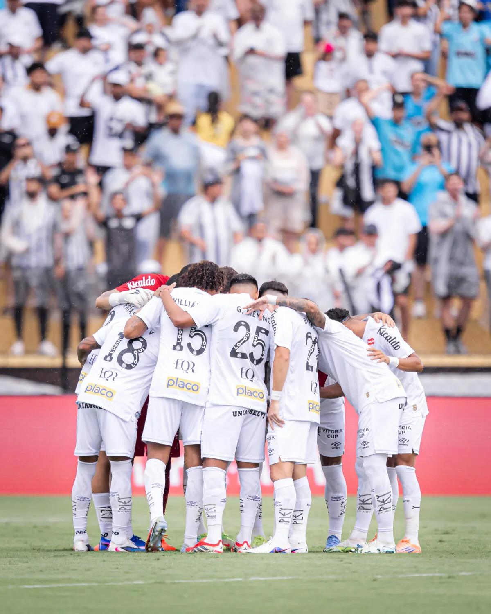
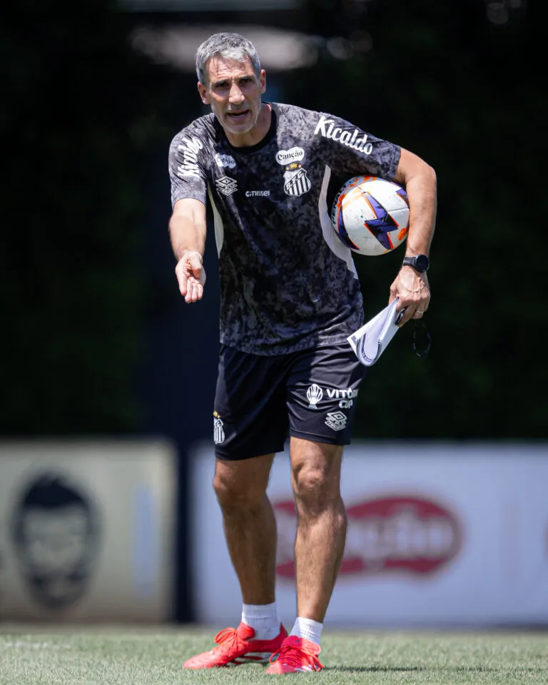

Eliminação do Santos nas quartas do Paulistão
Gabigol decepciona no campeonato

Em busca da primeira vitória no Campeonato Brasileiro
Santos recebe Vasco

Vojvoda comanda treino tático e Santos
Deve ter mudanças para encarar o Vasco

Como foi o último encontro do Santos com o Vasco
Choro de Neymar, demissão e crise